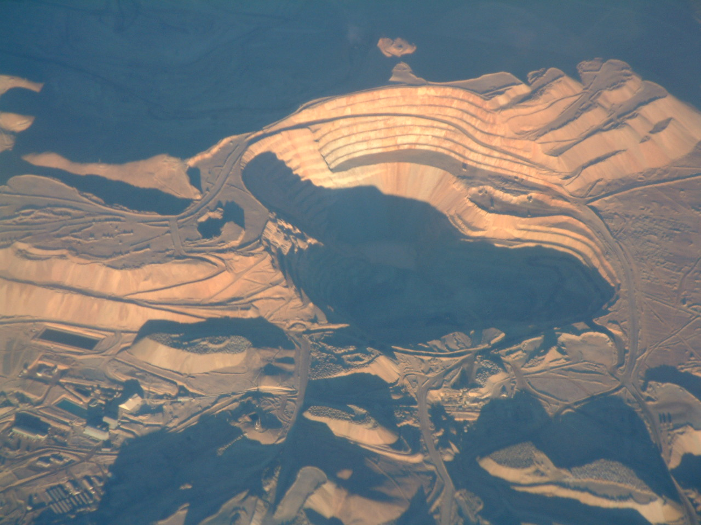
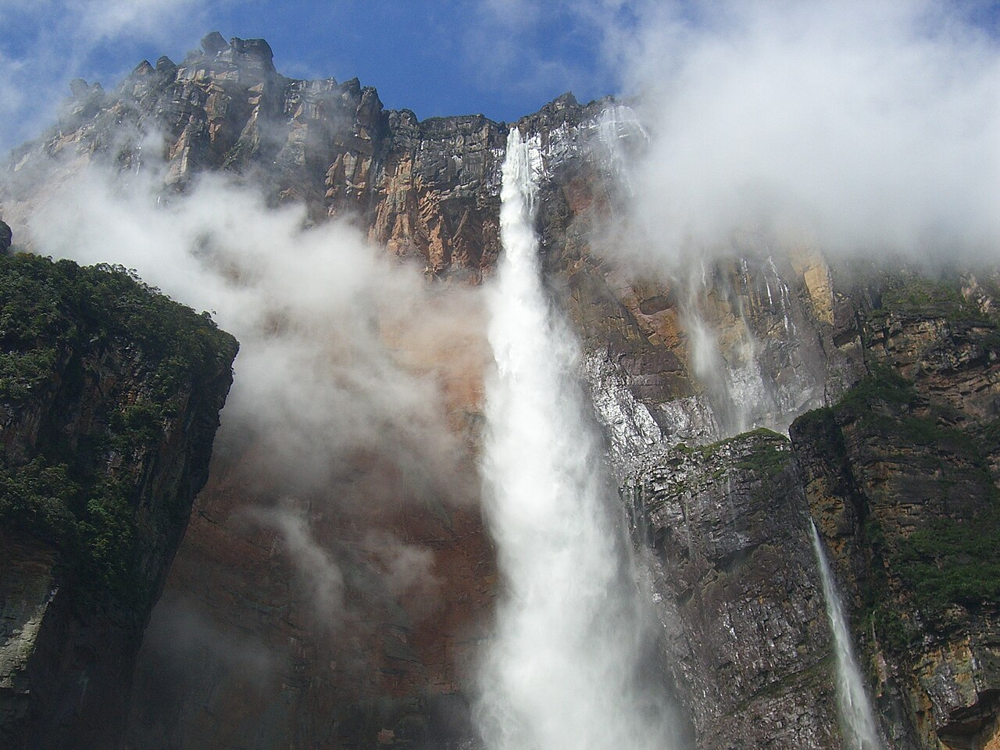
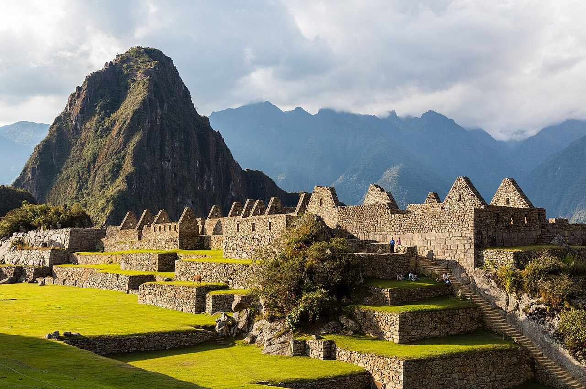

Стопанство на Южна Америка
Ще научиш: да обясняваш от какво зависи развитието на стопанството, да характеризираш главните стопански дейности и да съставиш туристически маршрут.
„Градът от машини в пустинята“
Пустинята Атакама в Чили е една от най-сухите на Земята — на места не вали с години. И все пак там има цял град от огромни машини и камиони, които работят денонощно. Какво правят те в пустинята?
Твоята задача, детективе: прочети досиетата, разгледай стопанската карта и събери 4 улики.
Обща характеристика на стопанството
на Южна Америка се развива с бързи темпове. Бразилия, Аржентина, Колумбия, Венецуела, Чили и Перу са сред 50-те страни в света с най-силно развито стопанство.
Защо е така? Помагат няколко групи фактори — отвори четирите карти по-долу.
В най-развитите страни — Бразилия, Аржентина и Чили — в много производства работят със съвременни технологии.
Но стопанството не е развито еднакво навсякъде. Най-силно са развити крайбрежните части — там са най-големите производствени центрове. Този неравномерен растеж влияе и на доходите: хората в различните части на континента печелят различно.
Четирите фактора
Докосни всяка карта, за да я разгънеш. Разгледай и четирите.
Защо крайбрежията са по-развити от вътрешността?
На картата оранжевата ивица е крайбрежието. Докосни я или бутоните, за да видиш причините.
Избери зона
Тук ще се появят причините.
⛓️ Веригата на причините
Земеделие
Земеделците отглеждат две групи култури.
За изхранване на местното население: царевица, пшеница, ориз и бобови култури.
За износ ( е продажба на стоки в други държави): захарна тръстика, кафе, какао и банани.
Животновъдството също е важно: Аржентина и Бразилия са сред световните износители на говеждо месо, а Бразилия продава и птиче месо.
Богатите океански води край бреговете дават риба: Чили, Перу и Аржентина имат силно развит .
Добив на полезни изкопаеми
Южна Америка има големи запаси от .
Нефт и природен газ се добиват във Венецуела, Бразилия, Колумбия, Перу и Аржентина.
се добива най-вече в Чили и Перу.
Желязна руда и се добиват в Бразилия.
От горите се добива ценна дървесина.

Обработваща промишленост
В суровините се превръщат в готови изделия. В Южна Америка се произвеждат метали и машини.
Автомобили правят в Бразилия, Аржентина и Венецуела.
Кораби, самолети, компютърна, космическа, ядрена и военна техника се произвеждат в Бразилия и Аржентина.
Електроенергията идва главно от , а в Бразилия и Аржентина работят и .
Обслужващи дейности
Най-силно развити са : транспортът, търговията и туризмът.
В транспорта преобладава автомобилният. Развити са още железопътният, въздушният и водният.
Търговията с другите континенти върви най-вече по море.
Туристи от цял свят идват заради водопадите Анхел и Игуасу, величествените Анди, природата на селвата, плажовете по карибското и бразилското крайбрежие, Мачу Пикчу и другите паметници на древната култура на инките.


Стопанска карта на континента
Избери група с бутоните, после докосни символ на картата (или чип под нея), за да отвориш кратко досие. Отвори по 3 символа от всяка група за значка.
Избери символ
Тук ще се появи досието.
Опростена карта за учебни цели. Символите показват по-важни райони на дейността, а не точни места. Галапагос е нанесен условно близо до брега — островите са далеч в океана, на запад от Еквадор.
Кой какво дава?
Свържи страната с това, с което е известна. Отговаряш веднага и виждаш обратна връзка.
Туристически маршрут
Ти си организатор на пътуване. Избери точно 5 обекта в реда, в който ще ги посетиш. Маршрутът се чертае по картата. Включи поне един природен и един културно-исторически обект.
Твоят маршрут
Докосни обект от списъка, за да го добавиш.
Мачу Пикчу
Мачу Пикчу е „изчезналият град на инките“. Построен е на 2400 м надморска височина през XV в.
Това е една от най-големите археологически забележителности на планетата и е част от . Всяка година го посещават милиони туристи.

Тайни от архива
Избери си роля
Напиши кратък текст от 3 изречения.
На лист хартия
Избери едно от двете:
- Стопанска карта: нарисувай контура на Южна Америка и нанеси 5 символа на стопанството (например кафе, мед, нефт, кола, водопад). Направи легенда.
- Рекламен плакат за туристическия ти маршрут: заглавие, 5-те обекта и по една рисунка или лозунг за всеки.
Words of the day
Докосни 🔊, за да чуеш думата и изречението.
¡Hola! 🇪🇸 Бонус на испански
Тези думи се използват в испаноезичните страни на континента.
Отговори с думи
Напиши кратък отговор, после натисни „Готово“, за да видиш примерен отговор, и сам се оцени.
Изпитът на детектива
3 нива по 3 въпроса. Всяко ниво отключва следващото. Грешните въпроси се връщат в края на нивото.
🃏 Флашкарти
Докосни картата, за да я обърнеш.
Какво правят машините в пустинята Атакама?
Събери 4-те улики, за да отключиш разкриването.
Твоите значки
Най-важното от урока
- Стопанството на Южна Америка се развива бързо. Бразилия, Аржентина, Колумбия, Венецуела, Чили и Перу са сред 50-те страни с най-силно развито стопанство в света. В Бразилия, Аржентина и Чили в много производства има модерни технологии.
- Четири групи фактори: природни (запаси от изкопаеми, разнообразен климат, води и гори), исторически (дълъг път на самостоятелно развитие — повечето страни са независими от началото на XIX в.), човешки (растящо население, по-малко неграмотни, развитие на образованието и науката) и политически (стопански реформи и свободна пазарна икономика).
- Стопанството е развито неравномерно: най-силно са развити крайбрежията с големите производствени центрове. Това влияе и върху доходите на хората.
- Земеделие: за храна — царевица, пшеница, ориз, бобови; за износ — захарна тръстика, кафе, какао, банани. Аржентина и Бразилия изнасят говеждо месо, Бразилия — и птиче. Чили, Перу и Аржентина имат силен океански риболов.
- Добив: нефт и природен газ — Венецуела, Бразилия, Колумбия, Перу, Аржентина; медна руда — Чили и Перу; желязна руда и боксит — Бразилия; ценна дървесина — от горите.
- Промишленост: метали и машини; автомобили — Бразилия, Аржентина, Венецуела; кораби, самолети, компютърна, космическа, ядрена и военна техника — Бразилия и Аржентина. Електроенергията е главно от ВЕЦ; АЕЦ има в Бразилия и Аржентина.
- Обслужващи дейности: най-силни са транспортът, търговията и туризмът. Преобладава автомобилният транспорт; връзките с другите континенти са главно по море.
- Туризъм: водопадите Анхел (Венецуела) и Игуасу (Аржентина–Бразилия), Андите, селвата, плажовете, Мачу Пикчу и други паметници на инките.
- Мачу Пикчу — „изчезналият град на инките“, на 2400 м, построен през XV в.; обект на ЮНЕСКО, посещаван от милиони туристи годишно.
📄 Текст за копиране (Google Docs / печат)
👤 За родителя: какво е добавено и източници
Извън учебника в този урок са добавени: интерактивната стопанска карта със символи и филтри (местата на символите са приблизителни); картите „Четирите фактора“ с по 2–3 примера; схемата и веригата на причините „Защо крайбрежията са по-развити“; играта „Кой какво дава?“; интерактивният туристически маршрут (по задача 3 от учебника) с текст за копиране; ролите „Екскурзовод“ и „Журналист в Чили“; творческата задача; английските и испанските думи; 5-те факта в „Знаеш ли, че…“; снимките; примерните отговори и тестът с флашкарти. Дейностите, страните и числата от параграфа са взети от учебника (Анубис, стр. 28–29) и преразказани.
Числата от учебника остават водещи (по тях се пита в клас). Проверка към днес:
- 50-те най-развити стопанства: учебникът изброява Бразилия, Аржентина, Колумбия, Венецуела, Чили и Перу. Класациите по БВП се променят всяка година и зависят от метода: по оценка на МВФ за 2025 г. Бразилия е около 10-о място в света по номинален БВП. Проверката не потвърди актуалните места на останалите страни, затова в урока е запазена формулировката от учебника, без да се твърди точен ранг.
- Мачу Пикчу: учебникът — 2400 м и XV в. Според справочниците височината е около 2430 м, а вписването в списъка на ЮНЕСКО е от 1983 г. Числата са близки.
- Водопад Анхел: общата височина е 979 м, а най-дългото непрекъснато падане е 807 м (по Гинес). Някои специалисти спорят дали 979 м е „един“ водопад, но рекордът е признат.
- Игуасу: намира се на границата между Аржентина (провинция Мисионес) и Бразилия (щат Парана). Броят на отделните водопади се дава различно (около 270–275), защото зависи от водното ниво.
- Мед: най-голям производител в света е Чили — около 24% от световния добив през 2024 г. (по данни на чилийската комисия по медта). Втора е ДР Конго (около 14%), а Перу е трета (около 12%).
- Кафе: най-голям производител е Бразилия. Дялът ѝ се дава различно според годината и метода — приблизително от 31% до 38%. В урока е записано „около една трета“.
- Банани и какао: учебникът казва само, че се отглеждат за износ. Връзките на символите с конкретни страни на картата (напр. банани — Еквадор, какао — Бразилия) са приблизителни илюстрации.
- Галапагос (в маршрута) са острови на около 1000 км от Еквадор; на картата са нанесени условно до брега. Атакама, Рио де Жанейро и Галапагос са добавени в списъка с обекти за маршрута по условие на задачата.
- Guinness World Records: Tallest waterfall
- UNESCO: Historic Sanctuary of Machu Picchu
- Plus Mining: дял на Чили в световния добив на мед
- Wikipedia: Coffee production in Brazil
- МВФ: БВП по страни (DataMapper)
- Natural Earth — данни за контурите на държавите (обществено достояние)
- Снимките са от Wikimedia Commons. Авторът и лицензът са под всяка снимка.